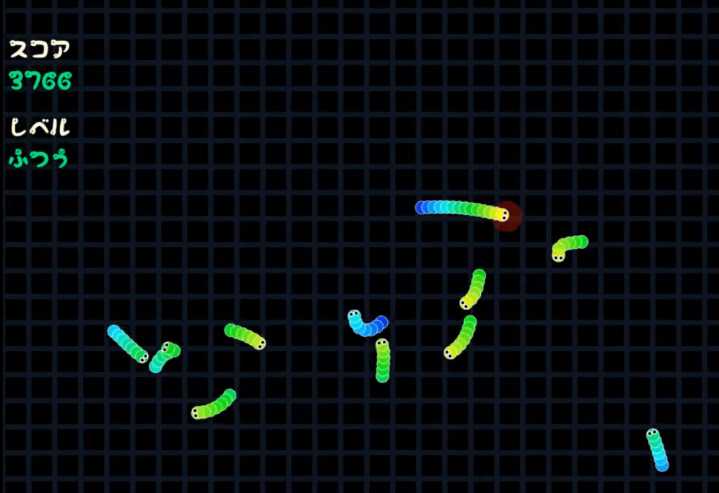
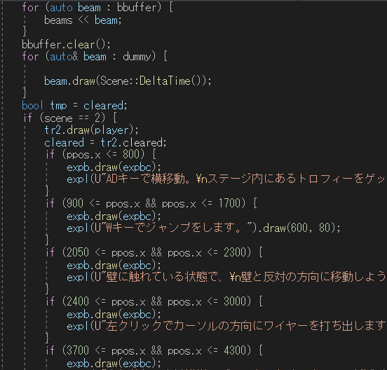
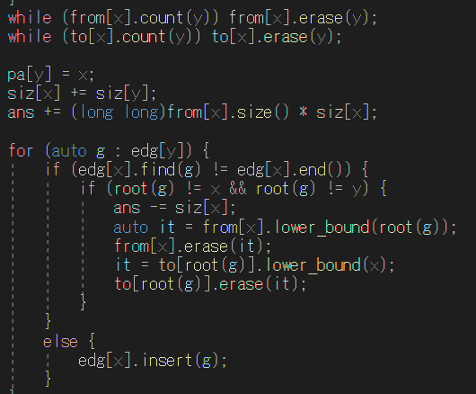
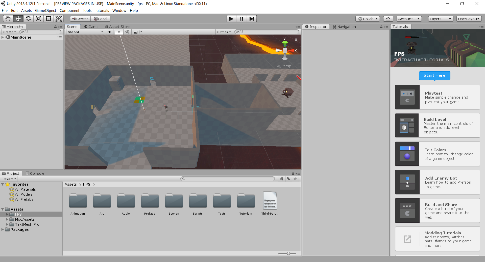
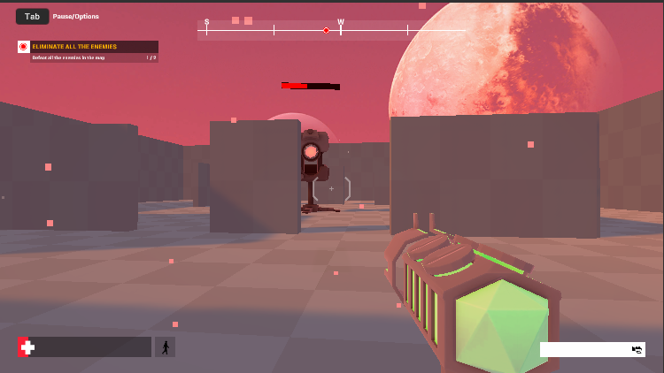
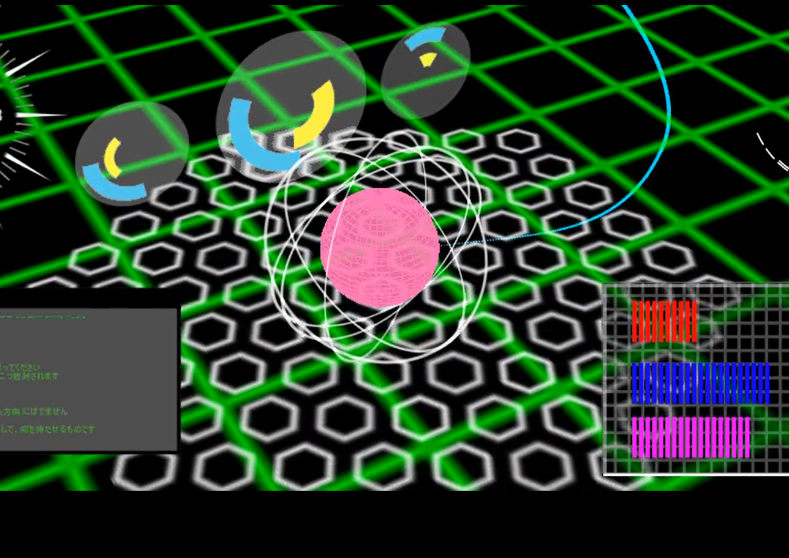

第1章 - プログラミングとは？¶
はじめに¶
今の世の中は、プログラムで溢れています。
あなたが今日通学に使ったであろう電車や、今見ているPCではプログラムが中で動いていますし、テレビなどで見るCGもプログラムを使って作られています。
これからそのプログラムをどうやって書いていくかを説明するわけですが、その前に、プログラミングとは具体的にどんなものかを見ていきたいと思います。
全体的な説明¶
プログラミングというのは、プログラムを作ることです。
プログラムというのは、誰が行っても同じ結果になる操作を連ねたものです。
料理本を思い浮かべてもらえば分かりやすいでしょうか。
あれは、誰が料理をしても、同じ現象が発生した後同じ結末になります。（多分）
プログラムが料理本だとすると、プログラミングは料理本を書く作業になります。
この料理本をコンピュータ君が一生懸命読み込んで、この通りに行動した結果、アプリやソフトなどの、”料理”が出来上がるわけです。
なんか可愛いですね。
料理本が紙と日本語と画像で作られているのに対し、プログラムは英語で使うアルファベットと数字、記号で作られています。
プログラムはアルファベットが並んでいるので一見難しく見えるかもしれませんが、中身はただどんな操作を行うかを並べたものなので、慣れればそこまで難しくはありません。
ただ、コンピュータに操作を伝えるためにはプログラムの書き方を覚える必要があります。
覚えるまでは大変で、何をやっているのかさっぱりわからないかもしれませんが、完璧に覚えると世の中のすごそうなパソコン技術は理論上出来るようになります。
他の部活に比べて、パ研は部活動を始めたての頃に行うことがとても地味で、大変で、何やってるのかよく分かりませんが、これを乗り越えた先にあるものは他の部活に引けを取りません。
プログラミング言語とは？¶
プログラムは操作の連なりという話をしました。この操作をコンピュータに伝えるために使うものがプログラミング言語です。
料理本君が人間に指示を出すのに日本語を使うようなものです。
人間向けの言語が伝える相手によって種類があるように、プログラミング言語も使う相手や目的によって使うものが違います。
パ研で主に教える言語はC++という言語です。
この言語は、C言語という、人間の言語に例えるとラテン語みたいな基本の言語が少し進んだもので、後で説明する競プロで使われますし、パ研の文化祭のゲームにもこの言語が使われています。
ただ、君たちに最初に使ってもらうプログラミング言語はJavaScriptという言語です。
この言語は、Webサイト等でよく使われている言語で、書き方がC++によく似ていますが、C++に比べて覚えやすいです。
できること¶
ゲーム¶
パ研は、毎年の文化祭で部員の作ったゲームを展示しています。新入生の皆さんの中には、このゲームで遊んでくれた人もいるのではないでしょうか。
展示されているゲームは、絵や図形が動き回っていて、どうなっているのか皆目見当つかないかもしれませんが、これも操作を並べて作られています。
操作キャラと壁がぶつかったら動きを止める、ボタンが押されたら弾を飛ばす、といった感じです。
このようなゲームを作るためには、しっかりとプログラムが書けるようになる必要があります。
このサイトの4章くらいまで終わった人はゲーム制作に最低限必要な能力が付いているので、志望者にはゲームの作り方を教えます。
そこら辺の部員を1匹捕まえてゲームの作り方を聞いてください。


競技プログラミング¶
 チャプター1でも説明していましたが、競技プログラミングは今のパ研の主な活動です。
ある問題を解決するプログラムをできるだけ早く正確に書く競技で、競プロと略されます。この記事でも今後は「競プロ」と表記します。
料理本で例えると、「バナナとりんごからボルシチを作ってください」と言われた時に、これを成し遂げるものをできるだけ早く組み立てる競技です。
競プロをするには、数理的思考能力が必要と言われています。逆に、競プロが上達すれば数理的思考能力も向上します。
中高生で競プロをしている人は主に情報オリンピックという、算数オリンピック、数学オリンピックなどと同じ国際科学オリンピックの1つを目標にしています。
パ研はとても競プロで強くて、今年の情報オリンピックの代表選考会では半分近くがパ研の部員でした。 日本中にこれをしている中高生がいると考えると、これはとてもすごいことです。
競プロが上達すると、プログラムを組み立てる能力が上がりますし、論理的に物事を考える力もつきます。 それに伴って、ゲーム制作などもしやすくなります。
中高生のうちに競プロをしておくと後々とても役に立つので、一度試してみることをお勧めします。
すごいゲーム¶
初めに書いた文化祭のゲームは、主に2次元の画像が飛び回るようなゲームで、今時はこんなゲームはほぼ見ません。
Nintendo Switch Liteにパ研の文化祭みたいなゲームがあったら仰天します。
よくテレビで見るような凄そうなのを作るには、ゲームエンジンというものを使う必要があります。
これを使うのは、高度じゃないゲームを作る程度のプログラミング能力が必要なことはもちろん、ゲームエンジンを使うための知識も必要になるので、とても難しいです。
第4章まで終わった人は、凄いゲームエンジンを使うための修業を始めるので、部員に声をかけてください。


すごいゲームエンジン
すごいサイト制作¶
よく見るWebサイトもプログラムでできていますし、このサイトも部員が作っています。
これは競プロのようなプログラミングとは少し違って、HTMLとCSSというものを使ってサイトのデザインをしています。
ただ、JavaScriptというプログラミング言語を使って、サイト上でできるゲームや、動き出すデザインなどを作ることがあるので、競プロやゲームのプログラムもある程度かける必要があります。
サイトだけ作って生きていきたいという人がいた場合は、第4章が終わった後はやる必要がないので、すぐに部員にサイトの作り方を聞いてください。
すごい機械学習¶
今巷で流行の人工知能は機械学習の延長線上にあります。
機械学習とは、大量のデータから機械に傾向を見つけさせることです。 これを頑張ると機械が新しいことでも判断できるようになり、人工知能が出来上がります。
機械学習をするには、統計学というデータを分析する学問の知識が必要になります。
機械学習は主にPythonというプログラミング言語を使って行われます。
競プロなどのプログラミング能力に加えてこれらの知識も必要なので、これをしたい人は頑張ってお勉強をしましょう。
すごいCG¶
テレビなどで見る凄いCGはパソコンで作られています。
具体的には、すごいゲームの章で説明したゲームエンジンのようなものを使って作られます。
CGではプログラミングをすることもありますが、基本は専用のアプリケーションを使って行われるので、 あまりプログラムが書ける必要はありません。
それなので、CGだけやってみたいという人はこの後は流し読みするくらいでいいので、部員にCGの作り方を聞いてください。
すごい動画制作¶
 去年のパ研の文化祭では、「プロジェクションマッピング」（自称）を展示しました。
この時に流した動画は部員が1から作ったもので、AviUtlというソフトを使って作りました。
動画だけ作りたい人はプログラミング能力が必要ありません。
（すごい高度なことをするときは必要だが）
動画だけ作りたい人はこの後は読まないでいいので、すぐに部員に作り方を聞きましょう。
すごいハードウェア¶
パ研にあるパソコンは、ノートPCを除き、毎年部員が部品を買ってきて組み立てています。
パソコンの組み立てなどをメインでしたいという人は、プログラミング能力が必要ないので、部員に作り方を聞きましょう。 （1年に1回くらいあるパソコン組み立てに参加できます。）
すごいロボット¶
ロボットを作るにはプログラミング能力が必要になります。
小さなコンピュータをロボットに載せ、レバーを押したときに動くみたいな感じのプログラムを書いて、ロボットを動かします。
ロボットを作るのによく使われる、「Arduino」というマイクロコンピュータは、C++に書き方が非常によく似ています。 なので、ロボットを作りたいという人は第4章までやってみるといいと思います。
ただ、今はパ研にロボットを作れる人は残念ながらいないので、プログラムが書けるようになったらあとは独学で頑張ってもらう必要があります。
（パ研として出来ることはサポートしますが）
パ研でプログラムを書くために必要なこと¶
ここまでプログラミングが何かを説明してきました。 ここからはパ研で守ってほしい心構え、というか私からのお願いについて書きます。
質問をしてください¶
このタイトルを見たとき、あなたはこう思ったでしょう。「ああ、これ知ってる」と。
新入生に対する上級生からのよくある訓示だって、でもやっぱり申し訳ないから質問はしないようにしようって、そう思ったことでしょう。
私も入学当初はそんなことを思っていたので、その気持ちはわかります。
それなので、ここでは少しぶっちゃけた話を書きます。
質問をしてほしいのはあなたのためではありません。私たちのためです。
あなたたちが質問をしないことによって私たちの仕事量が増えるんです。
分からないところを質問しなかったとしましょう。そうすると、分からないと当然プログラムが書けないので、わたしたちがプログラムを直す必要が発生します。 また、分からないのがどこかよくわからないまま、あなたたちにどこが違うのかを説明することになるんです。
これはとにかく大変なんです。
ここで質問をしていると、私たちがプログラムを直す必要がなくなり、あなたがどこが分かっていないのかが明確に分かるので説明もしやすくなります。
どこが分からないのかが良く分かれば、説明のしやすさが全く違います。月とすっぽんくらい違います。
なので、質問をしてください。
あなたにプログラミングを教えてくれる優しくてイケメンな、そう、イケメンな先輩の仕事量を減らすために分からないところは全て聞いてください。
「全部分からない」でもいいので聞いてください。
基本的に、この記事を含めたこの教材はパ研の部室で読むことを想定されていて、分からなかったら部員に聞いてみたいな感じで作られています。（違うものもあるけど）
しかし、コロナウイルスの影響で休校になっている状況を考えると、家でこの教材を読むこともあるかもしれません。その状況下で分からないところがあったときは、このページの一番下にある「Start the discussion」のところに何が分からないのかを書き込んで下さい。
また、Google検索などを行えば割とすぐに答えが見つかる事もあります。ただ、知識がない状況だと何が分からないのかも分からないみたいな状況になりがちなので、5分調べてみて分からなかったらすぐに質問を書き込むようにしましょう。
インデントを入れて¶
インデントを、入れてください。これはプログラムを書く中で3番目くらいに大事なことです。
あなたたちがプログラムを書くときに、もしインデントがないプログラムを書いてしまうと、プログラムが読みづらいのでプログラミングの習得が遅れます。
自分で自分のプログラムを読んだときに理解が出来なくなってしまうのです。
また、私たちがあなたのプログラムを改善したりするときにも、作業がとても大変になります。
インデントは大切です。
インデントは全てのプログラムの基本です。
この後、色々なプログラムの文法が出てきますが、これら全てを書くときにインデントが必要です。
世の中には、Pythonという、インデントを入れないとそもそもプログラムが動いてくれないプログラミングも存在するくらいです。
すぐにインデントをマスターするのは難しいでしょうが、これは最優先で出来るようになることを目指してください。
それが、プログラミングを習得するための最短路になります。
人の迷惑にはならないように¶
パ研はとても自由な部活です。
とても自由なので、部のパソコンを使ってゲームをしている人を見かけます。（かく言う私も昔はゲームばかりやっていました）
これは悪いことではありません。パソコンゲームでパソコンへの興味が出て、最終的にはプログラムをする、ゲームを作る側になってくれればそれは素晴らしいことだと思うからです。
ですが、それで真面目に活動をしようとしている人の邪魔になるような行動、例えばパソコンの電源コードを引っこ抜いたり、ゲームをしてパソコンを占領したり、叫んだり、そういうことはやめてください。（電源を抜くのは普通に壊れるし）
人の迷惑にならない範囲内で、楽しみながらプログラミングを学んでいきましょう。
おわりに¶
ここまで読むのお疲れさまでした、次の章へ、と行きたいところですが、その前に。
あなたは前章で出てきた「インデント」という言葉を分かっていますか？
多分分かっていないと思うんですけど、質問はしましたか？
していませんか？ なら、その場合は、あなたは前章の内容を理解していません。
反省をして今すぐに質問をしましょう。
さて、ここまで、プログラミングや、パソコンでできることを並べてみました。
プログラミングの大体のイメージが付いたでしょうか？
プログラミングでできることも、できないこともありました。
基本はそれぞれのしたいことをすればいいと思いますが、わざわざ選択肢を狭める必要はないので、パ研でできることは一通り試してみるといいと思います。
次の章では、簡単なプログラムを書いて、プログラミングのお気持ちを理解します。
ここを通り抜ければ、プログラマーの卵くらいにはなるので、頑張りましょう。
文責：清水健吾（Thistle）